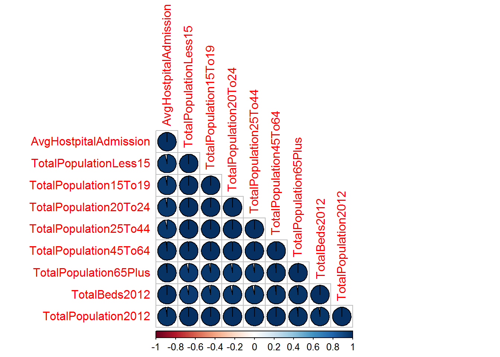
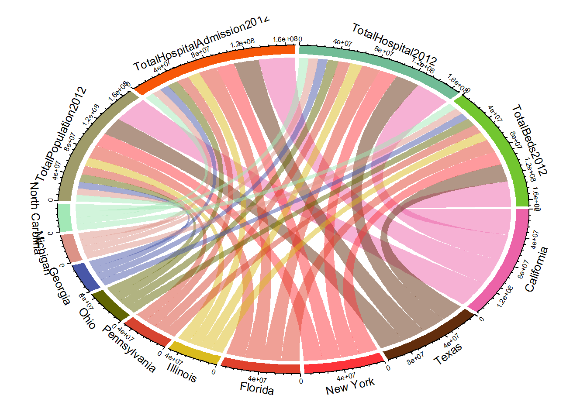
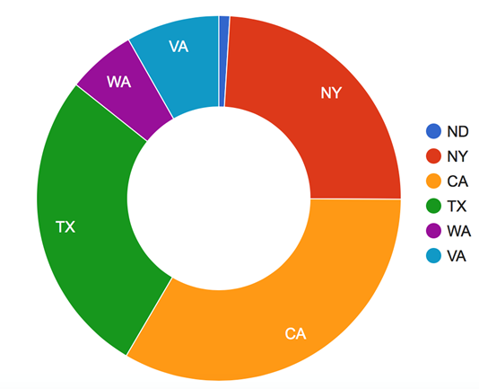

EDAV
PROJECT 3
HEALTHCARE DISTRIBUTION IN USA
Group 7 Team
Introduction:
Health resources distribution in US is an important issue that concerns most of its citizens. It is strongly related to the social fair and public good.
Our team was interested to find whether the health resource distribution such as the number of hospitals and hospital beds, number of doctors and the number of medical students in each state is correlated to the demand of the medical resource and the income of the residence in each state or not. To find answers, we used the data resource from the The Health Resources and Services Administration (HRSA) (http://ahrf.hrsa.gov/). The Health Resources and Services Administration (HRSA) is the primary Federal agency for improving access to health care services for people.
Demographics and Hospitals
In order to visualize the imbalance of health care resources among 50 states, we used subset data containing state level income per capita, population, population density, total hospitals, total hospital bed, primary physicians between 2010 and 2012. We used Shiny application.
- Click here to run the application.
The shiny application is composed of 3 panels. The top panel shows a colored US state map by income per capita, population density, hospitals per 1000 people, hospital bed per 1000 people, or primary care physicians per 1000 people based on quantile. The bottom left panel displays a bubble chart with income per capita as vertical axis, hospitals per 1000 people, hospital bed per 1000 people, or primary care physicians per 1000 people as horizontal axis. The size of bubble is based on population density, the color of bubble is based on region. The bottom right panel is the control panel, used to choose the category, and the year to plot.
The income per capita map shows the north east states are among richest states as we expected. Also DC, California are rich too. Wyoming, North Dakoda are richer than California.
When we look at population density map, population has high concentration in East and West coast states. When we look at the hospitals per 1000 people map, the mid-west area is high in that category, as well as hospital bed per 1000 people. New York and California are among lowest 10% in terms of hospitals per 1000 people. But New York State is in the middle in terms of hospital beds per 1000 people, while California is still in the lowest 10% in that category. It tells us New York state hospitals have more bed on average. While Washington, Oregon, California have not lots of hospitals, hospital beds, but they has good resource in primary care physicians. The concerning part is that a few states are lacking primary care physicians, like Idaho, Nevada, Utah, Texas, etc.. The map shows the imbalanced distribution of primary care physicians.
The bubble chart shows it doesn’t have much correlation between income per capital and hospital, hospital bed, but strong correlation between income per capital and primary care physicians per 1000 people.
Analysis of sample states
In order to obtain improved understanding of the relationship between the factors affecting the resource distribution, we looked at few states in greater detail. We chose the data in most recent year 2012, and six presentation states - North Dakota (ND), New York (NY), California (CA), Texas (TA), Washington (WA), Virginia (VA), which cover the different levels of developing, income and scale of population. The dataset includes the number of hospital admissions, the population, the total medical expense, income, number of doctors, number of hospitals, number of beds and number of students.
Figure 2: Income per Capital in Each State (unit $)
We can find that the income per capital in NY and ND are apparently higher than other four states. The income per capital and the hospital admissions in each state represents the metric to evaluate the developing level and the demanding of the medical resource in each state.
Figure 3 : Correlation of factors in each state

Here we evaluate the correlation between the medical resource distribution including the number of doctors per hospital admission, the number of hospitals per hospital admission, the number of beds per hospital admission, and the number of graduated medical students per hospital admission in 2012, and the number of hospital admissions, population, medical expense and the income per capital in each state.
The result is quite interesting, we find the number of doctors is positively correlated to the number of hospital admissions, but the number of hospital and beds are negatively correlated to the number of hospital admissions. It means that, in the state with big number of hospital admission like CA, NY, there would be more doctors in these states but the number of hospitals and beds in the hospital are less then other states. We can infer that in these states, more doctors would stay in the big hospitals and serve many residences in the nearby communities. While in other States like WA and VA, the residences lived more distributed and there are many small hospitals in these states. In each hospital there is only a small number of doctors. These two different patterns could be inferred from the correlation graph.
Race and Beds Distribution
In this section, we look deeper into health facility distribution, which is defined as number of beds per 1000 persons in different states. We use the panel data from 2000 to 2012.
Intuitively, the age structure of a population has something to do with the number of beds per 1000 persons: older the population, more demand for the health facilities. Our question is that does this relationship robust among different races, which means whether the proportions of white elders and black elders are both good positive indicators for the number of beds per 1000 persons.
We draw two trellis plots for the number of beds per 1000 persons v.s. logarithm proportion of blank male over 65 and logarithm proportion of white male over 65. We can see that, within each year, local polynomial regression shows dramatic negative relationship between logarithm proportion of blank male over 65 and the number of beds per 1000 persons in two major intervals. The trend is even more straightforward if we fit a linear regression to the data. As for the logarithm proportion of white male over 65, we can observe evident positive relationship between it and the number of beds per 1000 person in the middle interval of local polynomial regression. Also, the positive linear trend exits.
To do it more formally, we use fixed effect model for panel data to train a model in order to fit the data. We have the proportions of black male over 65, black female over 65, white male over 65 and white female over 65. The F statistic and the p-value along with the trellis plot of observed value v.s. fitted value can show that it’s a good model to fit the data. In this model, the coefficient of proportion of black male over 65 is negative.
With these relationships, we may not be able to say that racial inequality accounts for the inequality of health facility distribution in terms of number of beds per 1000 persons because we need to control for several other variables. However, these relationships at least offer us some hints to explore in the further studies.
Hospitals and Patient admissions
There is high positive correlation between number of hospitals and number of patient admissions at national level. We expect that since patients will have more access where there are more hospitals. However, we wanted to check if the number of admissions always goes up with number of hospitals for each state.

We geneated distribution of hospitals and patient admissions across states. There is a general trend of more admissions where there are more hospitals. However, there are a few exceptions:
* TX has the most number of hospitals but CA has the highest number of patient admissions.
* NY and FL have similar number of hospitals and admissions
* Although IL and LA have same number of hospitals, LA has far fewer admissions
This graph also explores if market crash of 2008 had effect on the number of hospitals and admissions. From the graph, we do not see any significant change in patient admissions except in CA. We will need more details on CA admissions to make any inferences.
??Section5 Heading (Priyatosh)??
In order to find additional dependence between Average Hospital Admission, Population by Age, Number of Hospitals and Total population of various states, following correlation plot and chord diagram was prepared. Strong correlation can be observed between average number of hospital beds and patient admission.


??Section6 Heading (Daniel)??
